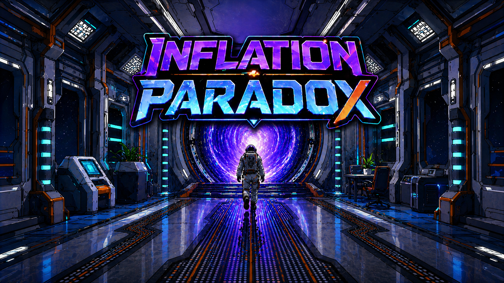

Realidad virtual
Inflation Paradox
Experiencia educativa de realidad virtual en la que el jugador viaja a través del tiempo y analiza decisiones financieras relacionadas con la inflación.
Mi participación: programación de mecánicas, interacciones VR, interfaces, preguntas educativas e integración para dispositivos Meta Quest.